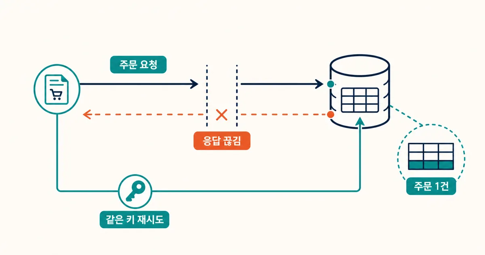
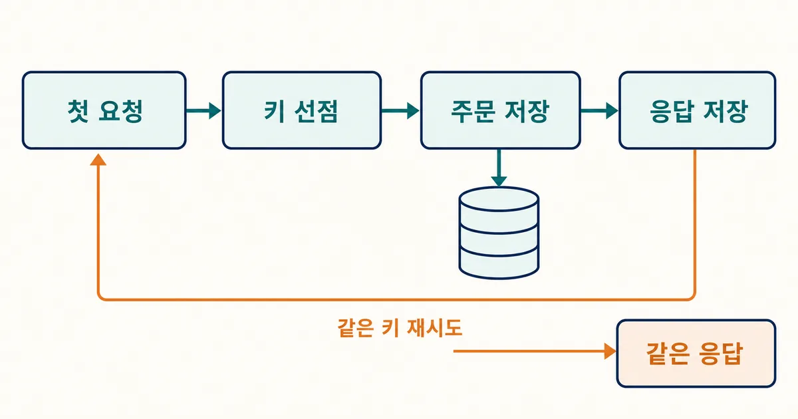
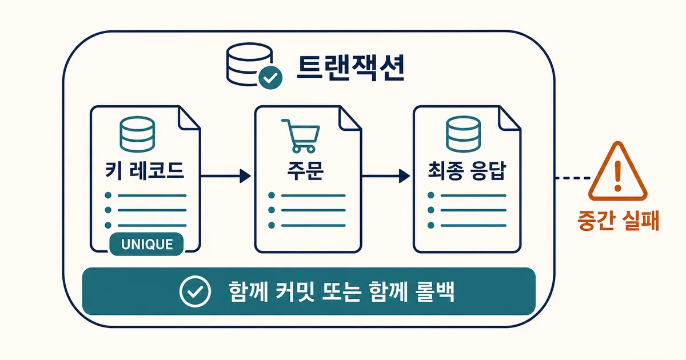
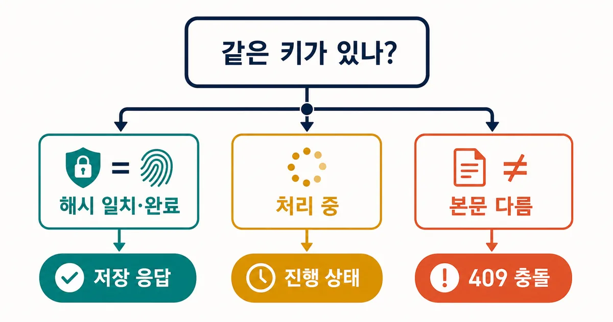

2026. 7. 22 (수) · 약 11분
주문 버튼을 한 번 눌렀는데 주문이 두 건 생기는 문제는 사용자의 실수만으로 설명할 수 없다. 서버가 주문을 저장한 뒤 응답이 끊기면, 앱과 프록시는 성공 여부를 모른 채 같은 POST 요청을 재시도할 수 있다. 이 글은 그 애매한 실패를 안전하게 다루는 Idempotency-Key 패턴을 주문 API에 적용한다. 키를 어디서 만들고, 데이터베이스에서 어떤 순서로 선점하며, 처리 중인 재시도와 서로 다른 본문을 어떻게 구분할지까지 구현 기준을 얻을 수 있다.

개발 가이드
최신 기준 · HTTP 표준·IETF 초안·결제 API 공식 문서와 독립 구현 자료 교차 확인 · 2026. 7. 22
Idempotency-Key로 중복 주문을 막는 API 설계와 PostgreSQL 구현
POST 재시도는 성공 여부가 불명확한 네트워크 실패에서 시작된다. 클라이언트가 논리적 작업당 하나의 키를 보내고 서버가 키·요청 해시·결과를 원자적으로 보관하면 중복 부작용을 줄일 수 있다.
1. ‘성공했는지 모르는 POST’가 중복 주문의 출발점이다
앱이 POST /orders를 보낸 뒤 5초 안에 응답을 받지 못했다고 하자. 서버는 이미 주문을 커밋했을 수도 있고, 처리 중일 수도 있으며, 실제로 실패했을 수도 있다. 클라이언트 입장에서는 이 셋을 구별할 증거가 없다. 이때 새 요청처럼 재시도하면 같은 장바구니가 두 번 주문될 수 있다. 멱등성은 같은 논리적 행동의 재시도를 한 번의 결과로 접는 API 계약이다.
HTTP 표준은 메서드의 의도를 정의하지만, POST 자체는 멱등 메서드가 아니다. 따라서 주문 생성처럼 부작용이 있는 POST에는 애플리케이션 계층의 식별자가 필요하다. IETF의 Idempotency-Key 초안도 클라이언트가 만든 고유 값을 헤더로 보내 비멱등 메서드의 재시도를 안전하게 만드는 방식을 다룬다.

2. 키 하나는 ‘요청 횟수’가 아니라 ‘사용자 의도’ 하나를 뜻한다
클라이언트는 결제 버튼을 누른 한 번의 의도마다 예측하기 어려운 새 UUID를 만들고, 네트워크 재시도에는 반드시 같은 값을 재사용한다. 버튼을 다시 눌러 새 주문을 시작했다면 새 키가 필요하다. 서버가 키를 만들면 응답이 끊긴 뒤 클라이언트가 같은 작업임을 증명할 수 없으므로, 키 생성 책임은 호출자에게 둔다.
| 상황 | 키 | 서버 기대 동작 |
|---|---|---|
| 첫 주문 시도 | 새 UUID | 키를 선점하고 주문 처리 |
| 타임아웃 후 재시도 | 기존 UUID 재사용 | 기존 결과 또는 진행 상태 반환 |
| 다른 장바구니 주문 | 새 UUID | 독립된 새 작업으로 처리 |
| 같은 키·다른 본문 | 재사용 금지 | 충돌로 거절하고 원인 기록 |
키만 비교하면 버그가 난 클라이언트가 같은 키로 금액이나 수량을 바꿔 보내도 이전 결과를 성공처럼 받을 수 있다. 최초 요청의 정규화된 본문을 SHA-256 같은 해시로 남기고, 재시도의 해시가 다르면 명시적으로 거절한다. 해시는 인증 정보나 원문 결제 수단을 저장하지 않는 비교용 지문일 뿐이며, 민감한 원문을 로그에 남기는 대체물이 아니다.
3. 데이터베이스의 유니크 제약이 동시 재시도의 경계가 된다
‘먼저 SELECT로 키가 있는지 확인하고 없으면 INSERT’는 경쟁 상태를 만든다. 두 요청이 동시에 없음을 확인한 뒤 둘 다 주문을 만들 수 있기 때문이다. 사용자 또는 테넌트 범위와 키를 묶은 UNIQUE 제약으로 먼저 한 요청만 소유권을 얻도록 해야 한다. 키 레코드, 주문, 최종 응답은 가능하면 같은 PostgreSQL 트랜잭션 경계에 둔다.
CREATE TABLE idempotency_records (
account_id bigint NOT NULL,
key text NOT NULL,
request_hash text NOT NULL,
status text NOT NULL,
response_status integer,
response_body jsonb,
expires_at timestamptz NOT NULL,
PRIMARY KEY (account_id, key)
);
-- 같은 트랜잭션에서 먼저 선점한다.
INSERT INTO idempotency_records(account_id, key, request_hash, status, expires_at)
VALUES ($1, $2, $3, 'processing', now() + interval '24 hours')
ON CONFLICT DO NOTHING;
INSERT가 한 행을 만들었다면 이 요청이 소유자다. 주문을 생성하고 성공 또는 애플리케이션이 약속한 최종 실패 응답을 기록한 뒤 커밋한다. INSERT가 충돌했다면 기존 레코드를 읽어 해시와 상태를 판정한다. 외부 결제 승인처럼 데이터베이스 밖의 부작용은 별도의 공급자 멱등 키, 아웃박스, 보상 흐름까지 설계해야 하며 이 테이블 하나로 완전히 해결되지는 않는다.
4. 같은 키는 완료·처리 중·본문 불일치로 나눠 응답한다
완료된 레코드에 같은 해시가 들어오면 최초의 상태 코드와 응답 본문을 그대로 돌려주는 방식이 가장 이해하기 쉽다. Stripe도 같은 키에 대해 최초 결과의 상태 코드와 본문을 보존하는 동작을 문서화한다. 처리 중이라면 짧게 기다린 뒤 최종 결과를 주거나 202와 상태 조회 URL을 주는 정책을 택할 수 있다. 어느 쪽이든 두 번째 요청이 일을 다시 시작해서는 안 된다.

| 기존 레코드 | 요청 해시 | 응답 예시 | 클라이언트 행동 |
|---|---|---|---|
| completed | 같음 | 저장한 201과 본문 | 성공으로 확정 |
| processing | 같음 | 202 또는 짧은 대기 | 새 키 없이 상태 확인 |
| completed 또는 processing | 다름 | 409 Conflict | 버그를 고치고 새 의도면 새 키 |
| 없음 또는 만료 | 해당 없음 | 새 작업 | 정한 보존 기간 정책을 문서 확인 |
5. 보안과 보존 기간은 키를 캐시 키처럼 다루지 않는 데서 시작한다
키는 추측하기 어려워야 하고 계정·테넌트 범위 안에서 조회해야 한다. 전역 키만으로 저장 응답을 찾으면 다른 사용자의 결과를 노출할 위험이 있다. 키 길이와 문자 형식을 제한하고, 요청 본문 해시와 응답 본문에는 토큰·카드 정보·개인정보가 섞이지 않도록 별도 마스킹 정책을 둔다. IETF 초안도 낮은 엔트로피 키와 검증되지 않은 키가 주입 공격과 데이터 유출에 악용될 수 있음을 경고한다.
- 키 조회의 복합 키는 account_id 또는 tenant_id와 함께 둔다.
- 인증 실패·형식 오류처럼 실행 전 실패를 저장할지 재시도 가능하게 둘지 명시한다.
- 보존 기간과 만료 뒤 재사용 동작을 API 문서에 적고 정리 작업을 모니터링한다.
- Idempotency-Key와 요청 본문, 응답 본문을 원문 그대로 운영 로그에 남기지 않는다.
6. 외부 결제·메시지 발송은 ‘한 번만’보다 복구 경로를 먼저 설계한다
DB 트랜잭션 안에서 이메일을 보내거나 결제사를 호출한 뒤 롤백하면 내부 기록과 외부 부작용이 어긋난다. 주문은 로컬 트랜잭션으로 확정하고, 보낼 이벤트를 아웃박스에 기록한 다음 워커가 전달하도록 분리하면 재시도 대상을 좁힐 수 있다. 결제 공급자가 자체 멱등 키를 제공하면 내부 주문 키와 별도로 매핑해 그 공급자에도 같은 논리적 결제 의도를 전달한다.
관측에서는 키 원문 대신 안전한 상관 식별자 또는 부분 마스킹 값을 사용한다. ‘키 선점 성공’, ‘동일 키 완료 재생’, ‘처리 중 충돌’, ‘본문 불일치’, ‘만료 정리’ 카운터를 남기면 중복 방지 기능이 실제로 어떤 실패를 흡수하는지 볼 수 있다. 재생 비율이 갑자기 오르면 네트워크나 클라이언트 타임아웃 설정을 함께 점검한다.
7. 배포 전에는 정상 요청보다 경계 조건을 테스트한다
테스트는 같은 키로 두 번 보냈을 때 주문 수가 하나인지와 응답이 동일한지부터 확인한다. 그다음 두 요청을 동시에 시작해 유니크 제약이 한 요청만 선점하는지, 같은 키에 본문만 바꿨을 때 409가 나는지 검증한다. 처리 중인 레코드와 만료된 레코드도 별도 시나리오로 둔다. 타임아웃을 흉내 내기 위해 첫 응답 전송만 끊는 통합 테스트를 만들 수 있다면, 서버 처리는 성공했지만 클라이언트가 재시도하는 실제 장면을 재현할 수 있다.
[ ] 같은 키·같은 본문 두 번 → 주문 1건, 같은 결과
[ ] 같은 키 동시 요청 → 한 요청만 소유권 획득
[ ] 같은 키·다른 본문 → 409, 새 주문 없음
[ ] 처리 중 재시도 → 문서화한 202 또는 상태 조회
[ ] 만료 후 재사용 → 문서화한 정책대로 동작
[ ] 로그와 메트릭에 민감한 원문 없음8. 한 엔드포인트에서 시작해 계약을 확장한다
처음부터 모든 쓰기 API에 같은 저장소를 붙일 필요는 없다. 중복이 금전·재고·예약·권한에 영향을 주는 주문 생성 하나를 골라 요청 헤더, 보존 기간, 상태 코드, 본문 불일치 규칙을 API 명세에 적는다. 이후 실제 재시도와 운영 지표를 보고 결제 승인, 환불, 비동기 작업으로 넓힌다. 핵심은 POST를 GET처럼 취급하는 것이 아니라, 실패한 네트워크에서 같은 사용자 의도를 식별하고 되돌아갈 수 있는 결과를 제공하는 것이다.
참고한 자료
- IETF draft: The Idempotency-Key HTTP Header Field공식
- RFC 9110: HTTP Semanticsstandard
- Stripe API: Idempotent requests공식
- EngineeringAtlas: Designing Idempotent APIs That Survive Retries독립 자료
- Dependabot 3일 쿨다운: 일반 업데이트와 보안 업데이트 차이, 설정법까지related
- Cloudflare 캐시가 대륙을 우회하는 이유: Smart Tiered Cache 리전 힌트 설정법related
멱등성은 POST를 마법처럼 안전하게 만드는 헤더 하나가 아니다. 같은 사용자 행동을 식별하고, 그 행동의 입력과 결과를 같은 트랜잭션 경계에서 보존하며, 재시도에게 일관된 답을 주는 계약이다. 먼저 중복이 치명적인 한 엔드포인트부터 적용하고, 타임아웃·동시 요청·본문 불일치 테스트를 남기면 이후의 결제와 비동기 작업에도 같은 판단 기준을 쓸 수 있다.